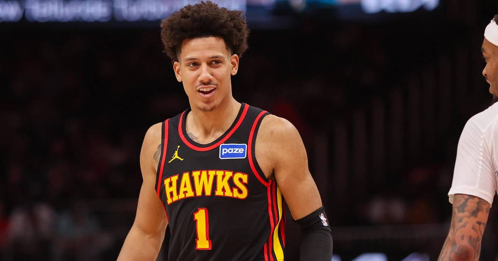

2-Leg Parlay (~+129): Hawks ML + Bruins ML
Two favorites in the best spots on the slate — Atlanta against a short-handed New Orleans team, and Boston at home against a Blackhawks team that can't score. Together they pay about +129.

The legs
• Atlanta Hawks moneyline (-170) at New Orleans (7:00 p.m. ET). The Hawks are 3-3 with a settled starting five and a +4.5 net rating; the Pelicans are 1-4, allowing 121.6 points a night, and are without Jordan Poole (ankle) and starting center Yves Missi (knee). Atlanta already showed it can win a close one on the road swing, beating Cleveland 114-111 on Thursday.
• Boston Bruins moneyline (-225) vs. Chicago (1:00 p.m. ET). The Bruins are 9-4-1 with a four-game home winning streak, averaging 4.1 goals over their last ten; the Blackhawks are 4-9-0, have lost four of five, and have scored six goals across that stretch.
Why this parlay
Two favorites, no lottery tickets. The Hawks' edge is health and creation — 32.5 assists per game against a Pelicans team missing its rim protection. The Bruins' edge is a goal differential gap of roughly two goals a night over the last ten games. At -170 and -225, the pair combines to about +129 — a fair price for two teams that should win outright more often than not.
The honest caveat: parlays need both legs, and the Hawks leg is on the road against a Pelicans team that just found its offense (132 against Sacramento). If New Orleans gets hot from three early, Atlanta's margin for error shrinks. And Boston's two-game skid is a reminder that even big favorites lose matinees. Nothing here is a lock — it is two good spots at a fair combined price.
Skipped on purpose: Rockets-Thunder (Chet Holmgren's fresh 8-10 week injury news plus Alperen Sengun questionable), Trail Blazers-Jazz (Ja Morant out four weeks, Lauri Markkanen questionable), and 76ers-Hornets (both teams on a back-to-back with injury reports still unfiled at preview time).
If gambling stops being fun, call 1-800-GAMBLER.
Sources: FanDuel Research — NBA odds, October 31, BetLegendPicks — NHL slate, October 31, Gridiron & Wine — NBA odds board